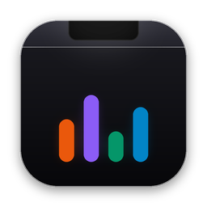

Notch
Notch is a free, open-source macOS utility that turns the area around your camera into a
workspace. Hover the notch to peek at now playing, click it to pin the panel open, and press
Esc to dismiss it. The full desktop demo on this page needs JavaScript.
Features: now playing with scrubbers and live lyrics, a per-app audio mixer with volume up to
400%, a 10-band EQ with AutoEQ import, a temporary file shelf with AirDrop and Quick Look,
Face ID unlock, calendar agenda, weather, Clock and Siri timers, system HUD replacements, and
simulated notch mode for notchless Macs.
Download Notch for macOS 14+ ·
Source on GitHub